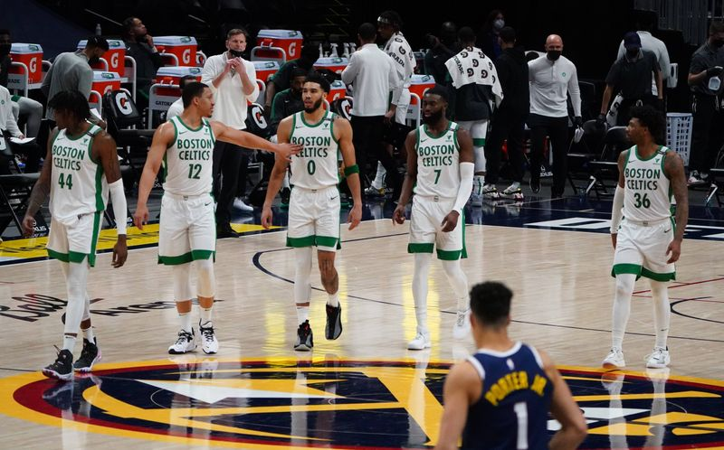
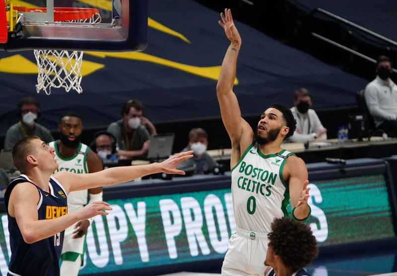

NBA roundup: Celtics go on 31-3 run to rally past Nuggets
Jayson Tatum had 28 points and 10 rebounds, Jaylen Brown finished with 20 points and eight rebounds and the visiting Boston Celtics rallied to beat the Denver Nuggets 105-87 on Sunday.
Marcus Smart and Kemba Walker scored 14 each and Robert Williams III scored 10 points for the Celtics, who went on a 31-3 run in the third and fourth quarters.
Nikola Jokic had 17 points, 11 assists and 10 rebounds, Michael Porter Jr. had 22 points and 11 rebounds for Denver.The Nuggets had their eight-game winning streak snapped.
Denver led 79-65 with 2:17 left in the third quarter, but the Celtics took control from that point.Walker scored seven points, Brown had six to get Boston within a point early in the fourth quarter, and Romeo Langford hit two free throws to give the Celtics an 80-79 lead, their first of the game.
Hawks 105, Hornets 101
Lou Williams scored on a tiebreaking drive for short-handed Atlanta with 58 seconds left as the Hawks pulled out a victory at Charlotte.
Bogdan Bogdanovic scored 32 points, making eight 3-point shots, and Clint Capela had 20 points and 15 rebounds for the Hawks, who moved ahead of Charlotte and into fourth place in the Eastern Conference.
Charlotte didn’t score in the last two minutes as the Hawks ended the game on a 16-4 run, including Williams’ basket, which gave Atlanta a 103-101 lead.Miles Bridges topped the Hornets with 23 points.
Knicks 102, Raptors 96
Julius Randle finished with 26 points, eight rebounds and five assists to help host New York end a nine-game, head-to-head losing streak against Toronto.
The Knicks won their second in a row despite letting an 18-point, third-quarter lead slip away against the Raptors, who had won the past four meetings between the teams at Madison Square Garden.
RJ Barrett finished with 19 points and five assists for the Knicks.Coming off a career-high 44 points in his previous game, Gary Trent Jr. led the Raptors again with 23 points on 9-of-17 shooting.Kyle Lowry totaled 19 points, seven rebounds and six assists.
Heat 107, Trail Blazers 98
Miami held Damian Lillard, who began the night third in the NBA in scoring at 29 points per game, to just 12 points in beating host Portland.
Lillard made just 3 of 10 shots from the floor in 37 minutes in his third-lowest-scoring game of the season.CJ McCollum and Norman Powell led the Trail Blazers with 17 each.
Miami was led by Bam Adebayo, who had a game-high 22 points.Jimmy Butler added 20 points.Butler also had game highs in assists (five) and steals (four).
Pelicans 116, Cavaliers 109
Zion Williamson scored 38 points as visiting New Orleans held off Cleveland.
Williamson made 16 of 22 field goals and shot 6 of 8 from the free-throw line.Brandon Ingram added 27 points and rookie Naji Marshall scored a season-high 15 as the Pelicans won their sixth straight game against the Cavaliers.
Dean Wade led Cleveland with a career-high 21 points, rookie Isaac Okoro had a season-high 19, Kevin Love added 19 and Cedi Osman scored 15.
Bucks 124, Magic 87
Khris Middleton collected 21 points and eight rebounds to lift visiting Milwaukee to a victory over Orlando.
Middleton made 8 of 13 shots from the floor in his return from a one-game absence from a sore right knee.He wasn’t alone, as Jrue Holiday (bruised left knee), Donte DiVincenzo (bruised right hip) and Brook Lopez (sore back) returned after sitting out Milwaukee’s Friday loss to the Hornets.
Bobby Portis recorded 16 points and 10 rebounds and Holiday added 12 points and seven assists for the Bucks, who snapped a three-game skid despite playing without Giannis Antetokounmpo (sore left knee).Orlando’s Mo Bamba highlighted his career-high 21-point performance by shooting 5 of 6 from 3-point range.
Clippers 131, Pistons 124
Los Angeles completed a 7-2 homestand on a winning note, but not without a fight from Eastern Conference cellar-dweller Detroit, which stayed close until the last three minutes.
Marcus Morris Sr.led the Clippers with 33 points, and Paul George finished with 32 points and nine assists.
The Pistons, who completed a Western Conference road trip at 2-3, got 26 points from Josh Jackson and 25 from Saddiq Bey.
Spurs 119, Mavericks 117
DeMar DeRozan scored 33 points, including the deciding jumper with one second to play, to lift visiting San Antonio to a win over Dallas that snapped a five-game losing streak.
Dejounte Murray added 25 points for the Spurs, who played the first of a road back-to-back that continues on Orlando on Monday.
Kristaps Porzingis scored 31 points and took 15 rebounds for Dallas before fouling out with 1:14 to play.Luka Doncic added 29 points for the Mavericks, who have lost two of their past three.
Pacers 132, Grizzlies 125
Caris LeVert scored 34 points, Malcolm Brogdon added 29 and visiting Indiana never trailed in its win over Memphis.
LeVert shot 14 of 20 from the floor en route to his high point total since joining the Pacers on March 13, and his 34 points represented his second-highest output of the season.
Jonas Valanciunas matched a career high with 34 points and grabbed 22 rebounds, 12 of which came on the offensive end.
Timberwolves 121, Bulls 117
Karl-Anthony Towns recorded 27 points, 12 rebounds and eight assists to help Minnesota beat Chicago in Minneapolis.
D’Angelo Russell also scored 27 points and fellow reserve Naz Reid had 18 points for Minnesota.Ricky Rubio made five 3-pointers while adding 17 points and nine assists for the Timberwolves.
Zach LaVine registered 30 points, seven rebounds and six assists and Nikola Vucevic scored 18 points for the Bulls, who lost for the 10th time in the past 14 games.
–Field Level Media
Posted On: 2021-04-12T00:00:00


Content Date: 2021-04-12
Download Date: 2021-04-16
Document ID: L0C049V60